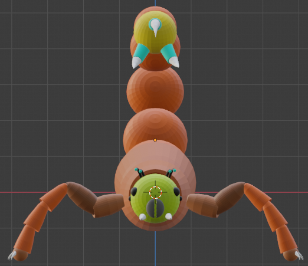
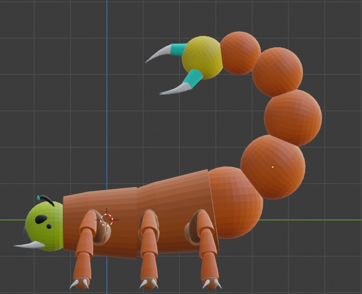
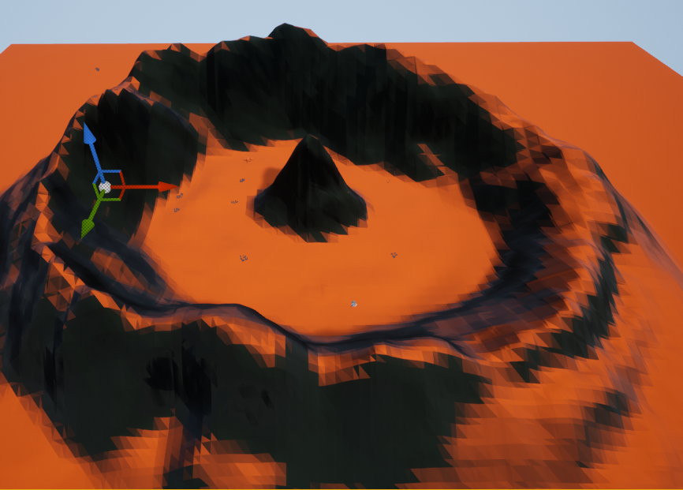

Game Design
Myridon
I have done many different things in Game Design. One of the things I'm most proud of is the Myridon. The Myridon is one of the creatures for our game that I was tasked with creating. Simon Tullis designed the concept art for it, and I was in charge of making the model of it.

The Modelling process was actually rather easy, as the way Simon designed it allowed me to only have to make some basic edits to shapes to get the shapes I needed. Thanks to the way I modelled it, it also made texturing a breeze, as I used a color palette and had each shape as a separate object, so I could just assign one shape one color.

The Problems with the Myridon didn’t really start until I made the decision to also rig the model in blender. The main problems ended up being more tedious then difficult, as I ended up spending about a week just adding, naming, constraining, and fixing the bones for the rig.

The Myridon wasn’t the only thing I’ve done in game design however, as I also worked on making the crater level for our game. The crater originally started in blender, where I was utilizing the sculpt tools to make the shape I wanted, and assigned something to make it low poly. this ended up not working very well as my edges ended up not being square, which would cause huge issues later down the line. My first task I set for myself this year was to redesign the crater. I ended up using the unreal engine this time around, as then we wouldn’t have to fight with importing models. this ended up being even better and easier than I thought, as while I had to do more work to make it low poly, it ended up being consistent low poly, instead of based on your zoom level, like in blender. this picture ended up being the way the final landscape looked.